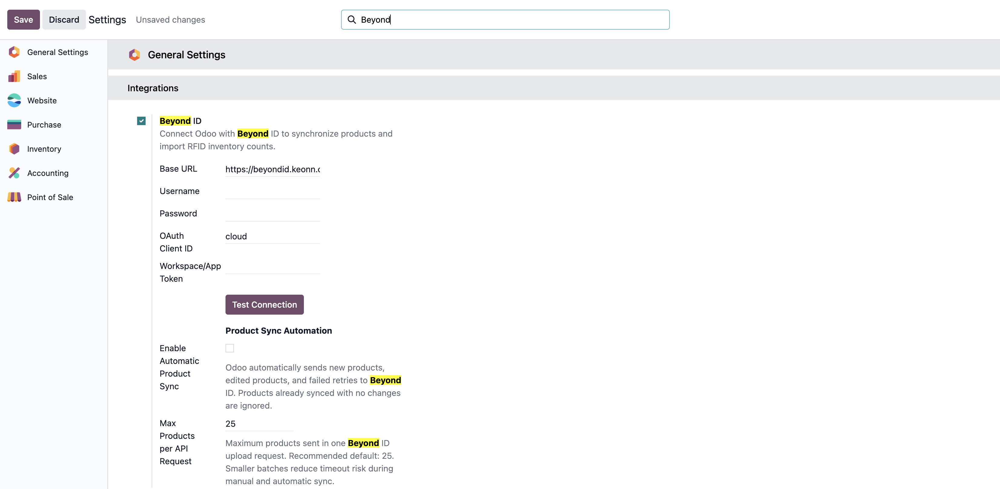
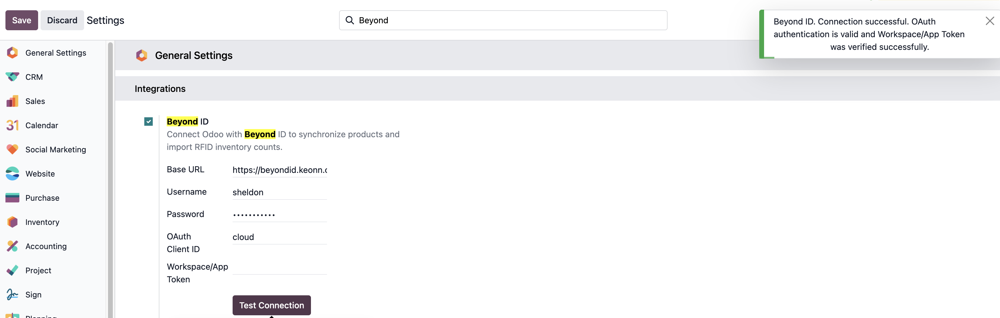

Retail IT - Beyond ID Manager User Manual
This module stores the Beyond ID / AdvanCloud API credentials and handles OAuth authentication on behalf of Odoo. It does not move any data itself — it is a configuration and connection layer that other Retail IT modules (RFID inventory imports, stock synchronisation, etc.) build on top of.
1. Introduction
Beyond ID Manager gives Odoo a single, shared place to store the credentials needed to talk to Beyond ID (Keonn's AdvanCloud RFID platform), and to obtain and cache the OAuth access token that every Beyond ID API call requires. It adds one panel to Odoo's General Settings screen and does not create any new menus, records, or lists of its own.
Main purpose
Provide a single, centrally-managed set of Beyond ID credentials (base URL, username, password, OAuth Client ID, Workspace/App Token) and expose a "Test Connection" button so staff can confirm those credentials work without leaving Odoo.
Operational flow
An admin enters the Beyond ID credentials once in General Settings and saves them. From that point on, any Retail IT module that needs to call Beyond ID (for example, to list shops or download an RFID stock count) asks this module for an access token instead of authenticating itself.
2. Configuration
Open Settings → General Settings and scroll to the
Integrations block, where a Beyond ID panel
appears. Toggle Enable Beyond ID Integration on to reveal the
credential fields.

| Field | Purpose |
|---|---|
Enable Beyond ID Integration |
Master switch. All other fields are hidden until this is turned on. |
Base URL |
Root domain for the Beyond ID / AdvanCloud API, e.g.
https://beyondid.keonn.com. Defaults to that address; a
trailing slash is stripped automatically before use.
|
Username |
Beyond ID account username used for the OAuth password grant. |
Password |
Beyond ID account password, stored masked in the UI. |
OAuth Client ID |
The AdvanCloud OAuth client identifier. Beyond ID's own documentation
uses cloud, which is pre-filled as the default.
|
Workspace/App Token |
Technical workspace/app code required by shop, inventory and stock endpoints. Not required for OAuth login itself, but required before any inventory-related API call can succeed. |
retailit_beyondid_manager.*) rather than on a dedicated record, so
there is exactly one Beyond ID credential set per Odoo database — it is not
possible to configure multiple Beyond ID accounts side by side in this module.
Example configuration
Base URL https://beyondid.keonn.com, Username
wilder, OAuth Client ID cloud, Workspace/App Token
house_of_gol. After saving, click Test Connection
to confirm the credentials and workspace token are both valid before any other
module relies on them.
3. How It Works
Beyond ID uses OAuth 2.0's password grant. This module exchanges the stored username and password for a short-lived access token, then caches that token so repeated API calls don't re-authenticate every time.
| Field / Data | Source | Rule |
|---|---|---|
access_token |
POST /advancloud/oauth/token |
Requested with grant_type=password plus the saved
username, password and OAuth Client ID. Cached as a system parameter
once received.
|
| Token cache lifetime |
expires_in from the OAuth response
|
The token is reused for subsequent calls until 30 seconds before its reported expiry (a safety buffer). Tokens that report 30 seconds or less of validity are not cached at all, and a fresh token is requested on every call instead. |
| Token cache invalidation | Saving General Settings | Any time the Beyond ID settings panel is saved, the cached access token is cleared, so the next API call always re-authenticates with whatever credentials were just saved. |
| Workspace verification | POST /advancloud/import/stock/status |
Called with the Workspace/App Token and a valid access token. A
result of OK confirms the token is accepted;
anything else is treated as a rejected workspace token.
|
4. Testing the Connection
The Test Connection button on the Beyond ID settings panel is the primary way to confirm a credential set works before relying on it elsewhere.

- Fill in Base URL, Username, Password and OAuth Client ID (and Workspace/App Token if it's available), then save the settings form.
- Click Test Connection. This always tests the last saved configuration, not whatever is currently typed into the form.
- The module requests a fresh access token (bypassing any cached token) to confirm the username, password and OAuth Client ID are correct.
- If a Workspace/App Token is saved, it is also verified against the shop status endpoint in the same test.
- A green notification confirms success and states whether the workspace token was checked; a warning or error notification explains what failed.
5. Edge Cases & Troubleshooting
The table below covers the errors this module can surface, and what they mean.
| Situation | What happens |
|---|---|
| Required field missing | Base URL, Username, Password or OAuth Client ID left blank raises a clear error naming exactly which field(s) are missing, before any API call is attempted. |
| HTTP 401 / 403 from Beyond ID | Treated as an authorization failure — almost always wrong username, password, or OAuth Client ID. Beyond ID's own error message and status code are included in the notification. |
| HTTP 408 / 429 / 500 / 502 / 503 / 504 | Treated as a temporary problem on Beyond ID's side (timeout, rate limiting, or a server error). Retrying later usually resolves it. |
| Connection timeout / network unreachable | Reported as a connection failure asking to verify the Base URL and that Odoo's server can reach the internet — this points at network or firewall issues rather than credentials. |
| No access token in the OAuth response |
Beyond ID returned HTTP 200 but no access_token — treated
as invalid credentials even though no error status was returned.
|
| Workspace/App Token rejected |
OAuth succeeds but the shop status check returns anything other than
OK. Reported separately from an authentication failure, so
it's clear the credentials are fine and only the workspace token is
wrong.
|
| Non-JSON or malformed response body | Reported as a connection failure with an invalid-response message, rather than a raw parsing error. |
6. Best Practices
- Treat the Beyond ID password and Workspace/App Token as sensitive credentials — only share them with staff who are configuring the integration, not with general Odoo users.
- Always run Test Connection immediately after saving new or changed credentials, rather than assuming they're correct and finding out later from a failing import.
- If a workspace token changes on the Beyond ID side (e.g. re-issued by Keonn), update it here first and re-test before touching any module that depends on it.
- Because there is only one credential set per database, don't reuse a production Beyond ID account for testing in a staging database — use separate Beyond ID accounts to avoid cross-environment interference.
- When troubleshooting a failing import in another module, check this settings panel first: a rejected workspace token or expired credentials here is the most common root cause of downstream Beyond ID errors.